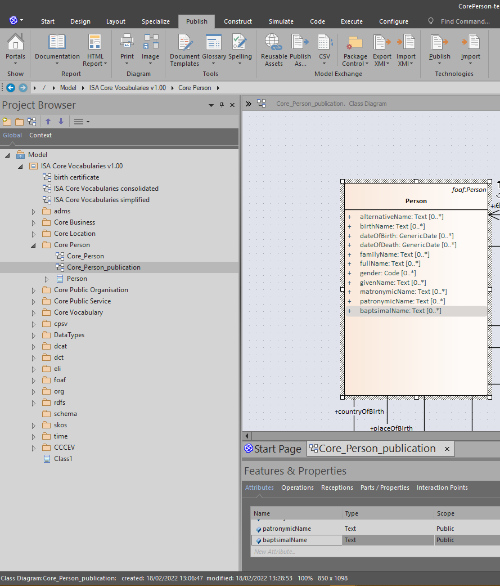
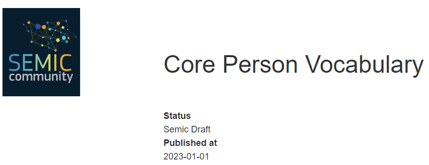
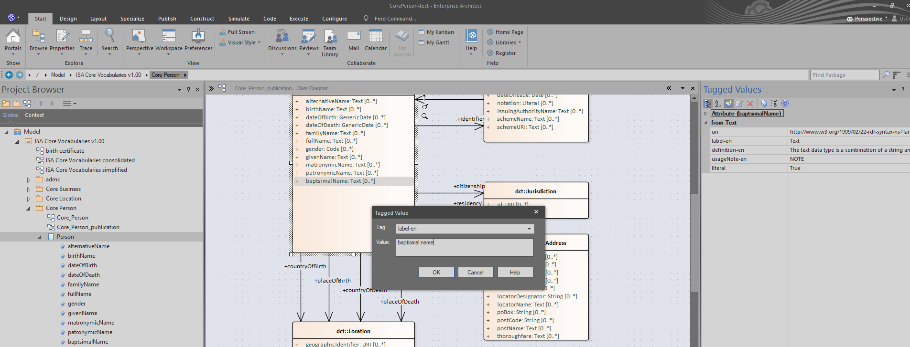
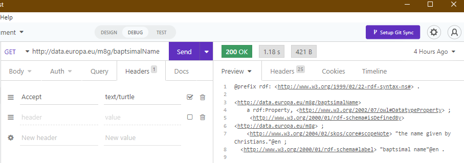
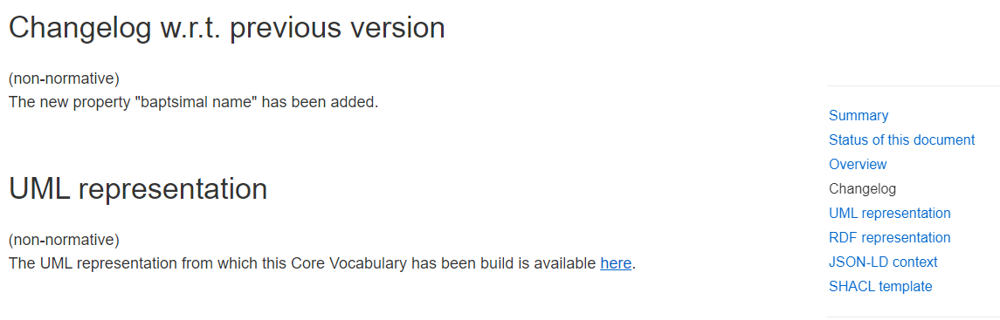
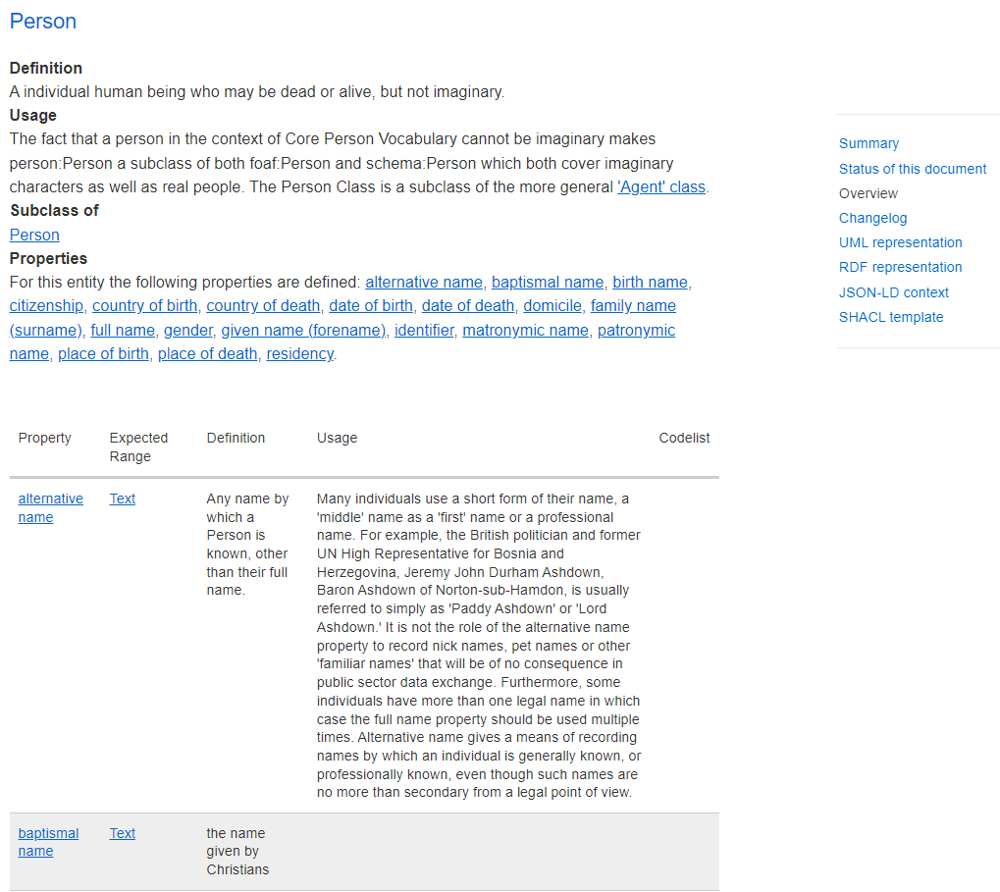

In the years of developing the Core Vocabularies, SEMIC has matured a lot of experience in managing the lifecycle of data specifications and their publications. After facing recurring update cycles, managing the propagation of the updates through the specifications dependencies, and orchestrating the input of multiple teams of experts into the final versions, it became clear that a systematic support would better suit the long term maintenance of the data specifications, as opposed to solely manual effort.
SEMIC data specifications are published as HTML pages to be consulted by the experts when building their data models. More than that, SEMIC has injected the publication workflow with the ability to coherently generate models with explicit semantics.
For the reason that every manifestation, HTML or semantic models, is sequentially processed from components that operate atomic transformation, SEMIC names this support as “Toolchain”.
The expected benefits of applying a systematic support to data specifications lifecycle are:
This manual describes the tooling that is supporting the editorial workflow for managing data specifications. It provides a hands-on guide on how to start reusing the SEMIC toolchain and how editors can use it to generate data specification artefacts.
The target audience for this manual are:
The publication process of a data specification involves 2 roles:
During the publication process, multiple tasks are performed covering different tasks executed over one or more use cases:
| Task | Use case |
| [Extend an existing data model](task:-extend-an-existing-data-model) | UC1 |
| Updating the UML data model | UC2 |
| Managing Persistent URIs | UC3 |
| Editing HTML specifications | UC4, UC5, UC6 |
| Deploy new software releases | UC7 |
| Customise the publication process | UC8, UC9 |
| Table 1: Publication workflow tasks and use cases | |
The Toolchain presented in this manual relies on a set of Github repositories, and are presented in the below table:
| Repository | Description |
| SEMIC thema | This repository mainly contains:
|
| SEMIC publication | This repository mainly contains:
|
| SEMIC generated | This repository mainly contains:
|
| SEMIC puri | This repository mainly contains:
|
| SEMIC proxy | This repository mainly contains:
|
| Table 2: Toolchain Github Repositories | |
In Table 3 the reader can find a summary of the repositories used, the roles involved and the tools needed per use case:
| Repositories / roles / tools | UC1 | UC2 | UC3 | UC4 | UC5 | UC6 | UC7 | UC8 | UC9 |
| SEMIC thema | X | X | X | X | X | ||||
| SEMIC publication | X | X | X | X | X | X | X | X | |
| SEMIC generated | X | X | X | X | X | X | X | X | |
| SEMIC puri | X | ||||||||
| SEMIC proxy | X | ||||||||
| Editor | X | X | X | X | X | X | X | ||
| Toolchain developer | X | X | X | X | |||||
| Git client | X | X | X | X | X | X | X | X | X |
| Text editor | X | X | X | X | X | X | X | X | X |
| Web browser | X | X | X | X | X | X | X | X | |
| Enterprise Architect | X | ||||||||
| HTTP client | X | ||||||||
| SSH client | X | ||||||||
| Linux Terminal | X | ||||||||
| DockerHub | X | ||||||||
| CircleCI | X | X | X | ||||||
| Table 3: View of Tools, Roles and Repositories needed to execute each use case | |||||||||
As can be seen, most of the time the editor will use mainly the SEMIC thema, publication and generated repository for its operations. The editor and toolchain developer collaborate on UC3 to create and enable persistent URI’s and in UC9 to create a new SEMIC thema repository.
In order to execute the task described in this section, the reader is referred to the existing SEMIC data specification Core Person. In this section, the first tasks in the editorial and publication process are described using mainly Core Person while the last tasks, covered by UC7, UC8 and UC9, focus on customising the publication process.
Objective
Setup a new custom data specification from an existing one in order to add new properties (UC2), create its own URI (UC3), edit metadata (UC4), update sections (UC5) and change the style of the specification (UC6). As an example in this use case, the objective is to create a copy of the existing Core Person and reuse as much as possible the current configuration.
Roles involved
Prior Knowledge
Repositories
Tools
Steps
Pull the latest code from the SEMIC thema, publication and generated repository
In the SEMIC publication repository modify the publication.json file inside the config/dev folder by adding at the end the following section (just before the “]” character):
,{ "dummy": "1", "urlref": "/doc/core-vocabulary/core-person-test", "repository": "git@uri.semic.eu-thema:SEMICeu/uri.semic.eu-thema.git", "branchtag": "main", "name": "core-person-ap", "filename": "config/core-person-test.json", "navigation": {} }
Notice the “,” character before to concatenate with the previous section and save the file.
3. In step 2 we indicated that the filename of the JSON configuration of the new Core Person should be in the config folder of the SEMIC thema repository called core-person-test.json, so duplicate core-person-2.json and rename it core-person-test.json
4. Edit the core-person-test.json and modify just the “eap” property to
```
"eap": "CorePerson-test.EAP",
Be careful to keep a “,” at the end to concatenate with the next section and save the file.
Test the result
Once the publication process ended, pull the latest code from the SEMIC generated repository and verify under the doc/core-vocabulary folder, that there is a core-person-test folder (as indicated in the publication.json file) including:
Objective
In the Core Person Test, there is a need to add “baptismal name” property within the Person class. It has been decided to:
Roles involved
Prior Knowledge
Repositories
Tools
Steps
>>>>> gd2md-html alert: inline image link here (to images/image1.png). Store image on your image server and adjust path/filename/extension if necessary.
(Back to top)(Next alert)
>>>>>

>>>>> gd2md-html alert: inline image link here (to images/image2.png). Store image on your image server and adjust path/filename/extension if necessary.
(Back to top)(Next alert)
>>>>>

>>>>> gd2md-html alert: inline image link here (to images/image3.png). Store image on your image server and adjust path/filename/extension if necessary.
(Back to top)(Next alert)
>>>>>

Click again on “Add new tagged value” icon, in Tag type “definition-en” with Value “the name given by Christians”, click OK
Click again on “Add new tagged value” icon, in Tag type “uri” with Value “http://data.europa.eu/m8g/baptismalName”, click OK
As the UML diagram changed but we reuse the same folder of the original Core Person, we change the core-person-test.json file and modify just the “site” property to
"site": "site-skeleton/core-person-test",
and save the file.
12. Under “site-skeleton” folder duplicate the core-person folder and rename it “core-person-test
13. From Enterprise Architect, save the picture of the UML diagram from the menu “Publish -> Image -> Save to File” and save it under the “site-skeleton/core-person-test” folder with the name “overview.jpg”, overwriting the current one.
14. Commit the 4 files changed (CorePerson-test.EAP, core-person-test.json and overview.jpg and semic-icon.png) and push to them to the SEMIC thema repository
15. Update the publication.json file in the SEMIC publication repository by changing the dummy value to
```
"dummy": "2",
and commit and push to the SEMIC publication repository
Test the result
Once the publication process ended, pull the latest code from the SEMIC generated repository and verify under the doc/core-vocabulary folder, that there is a core-person-test folder including:
>>>>> gd2md-html alert: inline image link here (to images/image4.png). Store image on your image server and adjust path/filename/extension if necessary.
(Back to top)(Next alert)
>>>>>
Objective
Having created the new property “baptismal name” in use case UC2, there is a need to create a new persistent URI related to the property.
When a specification is officially released, the persistent URI is maintained as RDF redirection and HTML redirection, both will be setup in this use case.
Roles involved
Prior Knowledge
Tools
Steps
Under releases/m8g folder, create 3 empty files: baptsimalName.nt, baptsimalName.rdf and baptsimalName.ttl
Open with a text editor the baptsimalName.ttl and type the following:
@prefix rdf: http://www.w3.org/1999/02/22-rdf-syntax-ns# .
http://data.europa.eu/m8g/baptsimalName
a rdf:Property, http://www.w3.org/2002/07/owl#DatatypeProperty ;
http://www.w3.org/2000/01/rdf-schema#isDefinedBy
http://data.europa.eu/m8g ;
http://www.w3.org/2004/02/skos/core#scopeNote "the name given by Christians."@en ;
http://www.w3.org/2000/01/rdf-schema#label "baptsimal name"@en .
And save the file.
3. For the other 2 formats, either they are typed manually or they can be generated with automatic tools such as [EasyRDF](https://www.easyrdf.org/converter), [RDF translator](https://www.google.com/url?sa=t&rct=j&q=&esrc=s&source=web&cd=&ved=2ahUKEwiwwrnOtvb7AhUN2xoKHVyPCh0QFnoECBEQAQ&url=https%3A%2F%2Frdf-translator.appspot.com%2F&usg=AOvVaw1My-fDwxW5-ZC29xHa5JQy), [RDF validator](http://rdfvalidator.mybluemix.net/)…
4. Commit and push the changes in the SEMIC puri repository
2. To setup the HTML redirection, pull the latest code from the SEMIC proxy repository
5. Open, with a text editor, the file “htmlmap.lua” and add, at the end of the file (before the “}” character), a line for for the new URI:
```
["/m8g/baptismalName"] = "https://semiceu.github.io/Core-Person-Vocabulary/releases/2.00/#Person%3Abaptismal%20name"
and save the file.
Be careful to add a “,” character at the end of the previous line so the properties can be correctly read.
Notice the last part of the line “Person%3Abaptismal%20name”, this is the HTML id generated in the UC2 in the index.html concatenating the class with property name.
6. Commit and push the changes to the SEMIC proxy repository
| Command | Description |
| cd uri.semic.eu-proxy/ | Enter in the folder of the SEMIC proxy repository |
| git pull | Insert the GitHub username and personal access token |
| make nginx | Create a new version of the nginx web server |
| make run | Run the nginx web server |
Test the result
>>>>> gd2md-html alert: inline image link here (to images/image5.png). Store image on your image server and adjust path/filename/extension if necessary.
(Back to top)(Next alert)
>>>>>

Objective
There is a need to update the metadata of the specification; in order to create a draft for this new release, the following properties are going to be updated:
Roles involved
Prior Knowledge
Repositories
Tools
Steps
Pull the latest code from the SEMIC thema repository
Open with a text editor the core-person-test.json under the config property
Change the respective lines:
"publication-state": "Semic Draft", "publication-date": "2023-01-01",
Be careful to add a “,” character after each line and save the file.
4. Commit and push the file changed in the SEMIC thema repository
5. Pull the latest code from the SEMIC publication repository
6. Update the publication.json file in the SEMIC publication repository by changing the dummy value to
```
"dummy": "3",
and commit and push to the SEMIC publication repository
Test the result
Once the publication process ends, pull the latest code from the SEMIC generated repository and verify under the doc/core-vocabulary folder, that there is a core-person-test folder including the index.html file.
Open the index.html with a browser and verify that the 2 properties have been correctly updated.
>>>>> gd2md-html alert: inline image link here (to images/image6.png). Store image on your image server and adjust path/filename/extension if necessary.
(Back to top)(Next alert)
>>>>>

Objective
Having created a new property in UC2, there is a need to inform readers of the new specification about what has been changed via a change log. The change log will be a custom section in the specification.
Roles involved
Prior Knowledge
Repositories
Tools
Steps
Pull the latest code from the SEMIC thema repository
Open with a text editor the core-person-test.json under the config property
Change the following line:
"template": "core-person-ap-test_en.j2",
Be careful to add a “,” character at the end of the line and save the file.
10. Now go in the “template” folders and duplicate the core-person-ap_en.j2 file into core-person-ap-test_en.j2
11. Open the core-person-ap-test_en.j2 and change the change log section with the following text and save the file:
```
{% block changelog %}
<p>
The new property "baptsimal name" has been added.
<p>
{% endblock %}
Notice the {% block changelog %} at the beginning and the {% endblock %} at the end to enclose the changelog block that will be used by a generic template.
Commit and push the files changed in the SEMIC thema repository
Pull the latest code from the SEMIC publication repository
Update the publication.json file in the SEMIC publication repository by changing the dummy value to
"dummy": "4",
and commit and push to the SEMIC publication repository
**Test the result**
Once the publication process ends, pull the latest code from the SEMIC generated repository and verify under the doc/core-vocabulary folder, that there is a core-person-test folder including the index.html file.
Open the index.html with a browser and verify that the section change log has been correctly updated.
<p id="gdcalert7" ><span style="color: red; font-weight: bold">>>>>> gd2md-html alert: inline image link here (to images/image7.png). Store image on your image server and adjust path/filename/extension if necessary. </span><br>(<a href="#">Back to top</a>)(<a href="#gdcalert8">Next alert</a>)<br><span style="color: red; font-weight: bold">>>>>> </span></p>

### UC6: Changing the colour of the hyperlinks
**Objective**
In order to reflect the style of the organisation creating the new specification, the HTML specification can be changed by changing the colour of the hyperlinks to the green colour.
**Roles involved**
* An editor that needs to customise the style of the specification
**Prior Knowledge**
* How to pull, commit and push in a Git repository
* Be able to understand a JSON structure to edit configuration files
* Be able to understand the template structure
* Knowledge of HTML/CSS to be applied to the new template
**Repositories**
* SEMIC publication repository, to change the local template
* SEMIC publication repository, to create a generic template and access to the JSON publication file
* SEMIC generated repository, to verify the artefact generated
**Tools**
* A Git client to pull, commit and push to the repositories
* A text editor, to edit configuration files
* To test, a web browser that can display the HTML specification
**Steps**
1. Pull the latest code from the SEMIC thema repository
2. Open the core-person-ap-test_en.j2 in the “template” folder, change the extends header to the following and save the file:
```
{% extends "semic_core_voc_test.j2" %}
>>>>> gd2md-html alert: Definition ↓↓ outside of definition list. Missing preceding term(s)?
(Back to top)(Next alert)
>>>>>
:
Commit and push the files changed in the SEMIC thema repository
Pull the latest code from the SEMIC publication repository
Go under the “templates” folder and duplicate the generic template semic_core_voc.j2 file to semic_core_voc_test.j2 file.
Open the semic_core_voc_test.js file with a text editor and add, towards the end, the following lines:
a, a:hover { color: #00cc23; }
Just before the </style> tag.
7. Update the publication.json file in the SEMIC publication repository by changing the dummy value to
```
"dummy": "5",
and commit and push to the SEMIC publication repository
Test the result
Once the publication process ends, pull the latest code from the SEMIC generated repository and verify under the doc/core-vocabulary folder, that there is a core-person-test folder including the index.html file.
Open the index.html with a browser and verify that the colour of the hyperlinks has been correctly updated.
>>>>> gd2md-html alert: inline image link here (to images/image8.png). Store image on your image server and adjust path/filename/extension if necessary.
(Back to top)(Next alert)
>>>>>

Objective
The toolchain is based upon open source software which are distributed as Docker images.
As software evolves new versions of the software will become available. Each new version will result in a release of a new Docker image with a new version number.
Within this use case, the objective is to change the toolchain so that it will use a new software release. We will upgrade the software that extracts the information from the UML model.
(NOTE) How software is being developed, maintained and released is the responsibility of the software component itself. Each (open source) software component will have its own methodology, approach and lifecycle.
Roles involved
Prior Knowledge
Repositories
Tools
Steps
Test the result
In the CircleCI web interface one can see the execution of the toolchain. If the Docker image was found by CircleCI, and the new release of the software had no breaking (API) changes compared to the previous version, the execution will be successful and the output visible in the SEMIC generated repository.
Otherwise the execution will halt at the step with an error. Resolving errors can happen in numerous ways:
(NOTE) Despite it may be needed to resolve an issue for one data specification, updating software releases is a global change for the toolchain. It impacts all current and future creations of data specifications specified in the SEMIC publication repository. Therefore such changes should be communicated to all editors.
Objective
To automate building data specifications, the toolchain is using the CI/CD solution CircleCI.
Consider the case that the generation of examples is not required for data specifications. Therefore, the objective is to adapt the CircleCI workflow to reflect that decision and exclude the generation of examples.
Roles involved
Prior Knowledge
Repositories
Tools
Steps
Part 1 - enable examples being generated for a specification
Pull the latest code from the SEMIC publication repository
Select in the SEMIC generated repository a data specification to create examples for. Let's consider this specification: Core Person test.
Trigger the build process for the selected data specification by updating the publication.json file in the SEMIC publication repository by setting the configuration property “examples” to “true”
"examples": "true",
Commit and push to the SEMIC publication repository
4. Verify in the SEMIC generated repository that the examples are created (see https://github.com/SEMICeu/uri.semic.eu-generated/tree/master/examples/core-person-test)
5. In the web interface of CircleCI the latest execution trace should mention a step in the visualised workflow called “render-example-templates”.
Part 2 - adapt the workflow to not generate the examples.
6. Open with the text editor the CircleCI configuration (file .circleci/config.yml) within the SEMIC publication repository
7. Outcomment the lines 566-568 ([https://github.com/SEMICeu/uri.semic.eu-publication/blob/master/.circleci/config.yml#L566](https://github.com/SEMICeu/uri.semic.eu-publication/blob/master/.circleci/config.yml#L566)) by putting a # symbol as the first character of each line
8. Outcomment line 601 (#- `render-example-templates)`
9. Commit and push the change to the SEMIC publication repository
10. Select in the SEMIC generated repository a data specification that has NO examples yet
11. Trigger the build process for an existing specification by updating the publication.json file in the SEMIC publication repository by changing the dummy value to
```
"dummy": "6",
and commit and push to the SEMIC publication repository
Test the result
Once the last change has happened the CircleCI will not anymore create examples, even when the property in the publication JSON is present. This is because the code that would react to this property (being true or false) is not anymore executed. This code has become dormant in the updated CircleCI configuration.
To verify the effect of the change, select another data specification that has no examples present and apply the steps of part 1 for that specification.One will observe that no examples are being created in the SEMIC generated repository.
One also can see the change in the CircleCI web interface. By outcommenting the lines the step has become dormant and is not anymore visible in the workflow.
Objective
In use cases 1 - 6, the current setup of the SEMIC toolchain is assumed: a single thema repository containing all Core Vocabularies. However, not all SEMIC data specifications follow the same life cycle as the Core Vocabularies, for instance DCAT-AP. In that case it is recommended to manage the data specification in its own thema repository.
This use case will initiate a new thema repository for a data specification.
Roles involved
**Prior Knowledge **
Repositories
Tools
Steps
Part 1 - Initialise a new thema repository with boilerplate information
Part 2 - Initialise the new thema repository with concrete information of the new data specification
Part 3 - Trigger a build of the data specification in SEMIC publication repository
These steps are similar to the explanation in UC1, and are thus summarised here in short.
Pull the latest code from the SEMIC publication repository
In the SEMIC publication repository modify the publication.json file inside the config/dev folder by adding at the end the following section (just before the “]” character):
,{ "dummy": "1", "urlref": "/doc/applicationprofile/DCAT-AP", "repository": "git@uri.semic.eu-thema:SEMICeu/Semicthema-DCAT-AP.git", "branchtag": "main", "name": "dcat-ap", "filename": "config/dcat-ap.json", "navigation": {} }
This defines a new publication based on the content of the newly created thema repository
1. Commit and push the change to the SEMIC publication repository
**Test the result**
When the new thema repository is correctly configured then the last step will result in an update to the SEMIC generated repository. A new directory will appear: /doc/applicationprofile/DCAT-AP.
In case of errors, consult the CircleCI web interface to find the step that caused the error. The most frequent sources of problems are:
* The JSON configuration files are not in the proper JSON syntax. In this case, a JSON formatter can be used (e.g., [jq](https://www.google.com/url?sa=t&rct=j&q=&esrc=s&source=web&cd=&cad=rja&uact=8&ved=2ahUKEwj5tpDpt_b7AhVhgc4BHTWBBXIQFnoECA8QAQ&url=https%3A%2F%2Fjqplay.org%2F&usg=AOvVaw32nsoMdEDWyJ_cAtdjZ0oz&cshid=1670929115779122), [JSON formatter and validator](https://jsonformatter.curiousconcept.com/)…)
* The configuration values refer to non-existing information like a non-existing diagram in the UML file, a non-existing template, etc.
* Usage of special characters and whitespace characters may also be a source of problems, but these are usually part of the data specification content. While these are the editors responsibility, the toolchain developer might be involved to find the exact source of these.